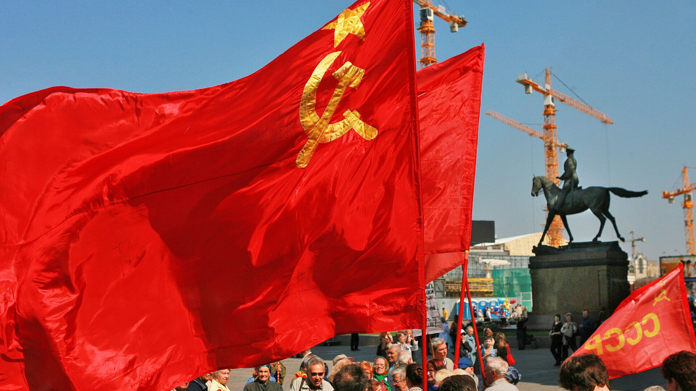

The :contentReference[oaicite:0]{index=0}, commonly known as the USSR, was a socialist state that existed from 1922 to 1991. It was founded after the Russian Revolution and was based on communist ideology, which aimed to create a classless society where the state controlled the means of production. The Soviet Union was governed by a single political party and had a centrally planned economy.
Throughout its existence, the USSR expanded its influence over Eastern Europe and became one of the most powerful countries in the world. Its political system, economic structure, and ideology strongly shaped the lives of millions of people both inside and outside its borders.

The Soviet Union was a global superpower with significant military and political influence.
After World War II, the Soviet Union emerged as one of the two main superpowers, alongside the United States. This period, known as the Cold War, was characterized by political tension, military rivalry, and ideological competition between the two sides. Although there was no direct large-scale war between them, conflicts occurred in different regions of the world.
The collapse of the Soviet Union in 1991 marked a major turning point in global politics. It led to the independence of several former Soviet republics and brought an end to the Cold War era. The legacy of the USSR continues to influence international relations and global geopolitics today.